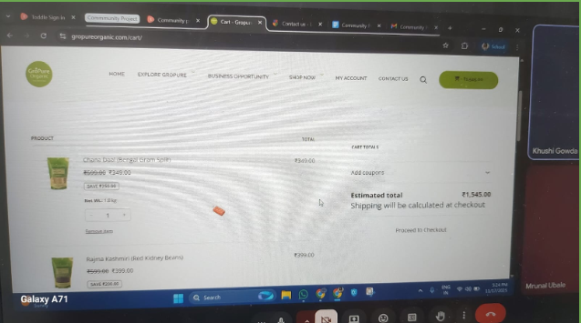
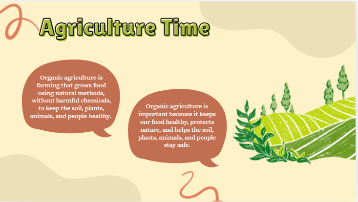
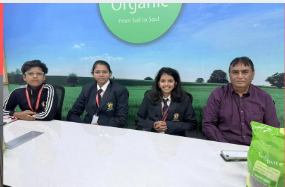
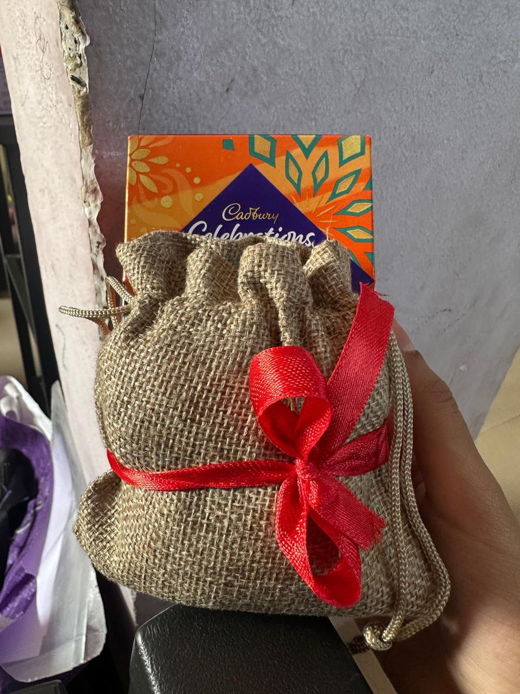
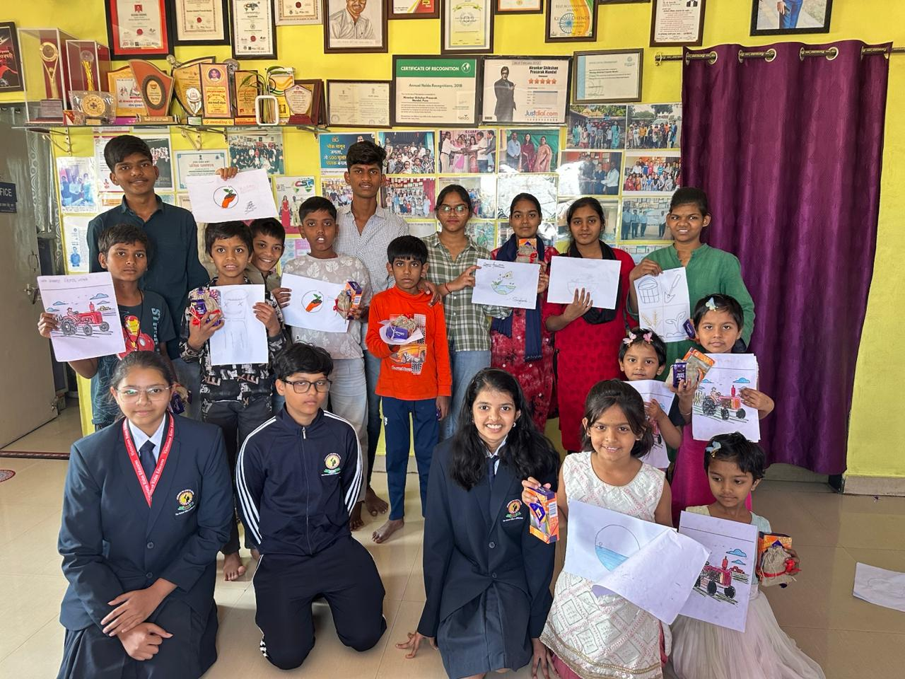
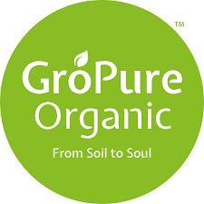
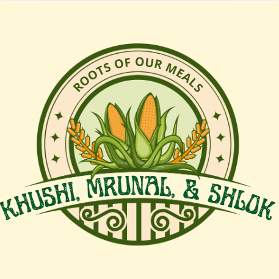
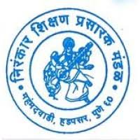
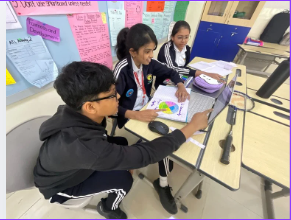
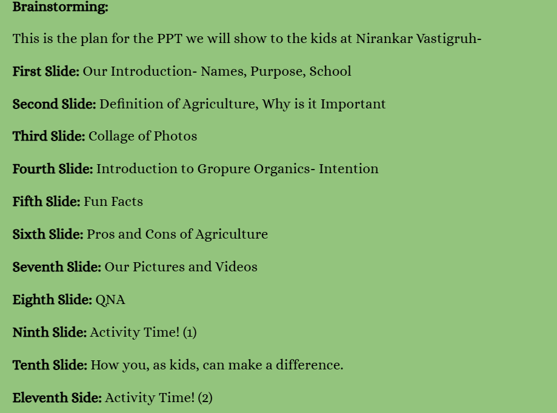

Exploring Sustainable Agriculture and the Journey of Our Food
About the Project
We visited GroPure Organics to explore sustainable agriculture practices. During the interview we interacted with experts to learn how farmers conserve water, maintain soil health, manage waste, and grow crops in environmentally friendly ways.
After the visit we created educational content highlighting sustainable techniques like composting, crop rotation, organic fertilisers, and renewable energy. Our aim was to raise awareness among the school community about how sustainable farming supports food security, biodiversity, and climate action.
Global Context & Goals
Globalisation and Sustainability
Promote sustainable food systems
Educate younger children about agriculture
Support farmers and the local community
Planning & Brainstorming
Our group conducted brainstorming sessions to explore ideas related to food, sustainability, education, and community service. We realised that sustainable agriculture connected our interests and addressed an important real-world issue.

After research we finalised our project idea: Roots of Our Meals. The project focuses on understanding how food is grown sustainably and spreading awareness about eco-friendly farming practices.

Action Taken
Collaborated with GroPure Organics
Conducted interviews with experts

Created awareness presentations
Prepared sustainable grocery hampers

Taught children about agriculture

Challenges & Setbacks
During our project we faced several challenges. Many schools were unable to host our educational sessions due to scheduling conflicts. We contacted over 20 schools before finally finding organisations willing to collaborate.
Another challenge was visiting GroPure farms. Because the farms were far away and undergoing development, we could not visit in person. Instead we conducted online interviews and used shared videos to learn about sustainable farming methods.
Learning & Outcomes
Learned about organic fertilisers such as Jivamrut
Understood sustainable farming practices
Developed teamwork, leadership, and communication skills
Timeline
Gallery





Impact & Reflection
Community Impact
Our project spread awareness about sustainable agriculture and healthy food systems. Our presentations and eco-friendly hampers helped children understand where food comes from and why sustainability matters.
Personal Growth
We developed communication, teamwork, planning, and leadership skills while working with organisations and overcoming real-world challenges.
Knowledge Hub
Quote
“It is better to have a family farmer than a family doctor.”
Did You Know?
Organic farming reduces chemical pollution
Crop rotation improves soil health
Composting turns waste into nutrients
Water conservation protects crops
Sustainability Tips
Buy organic products
Reduce food waste
Grow plants at home
Use reusable bags
Contact & Credits
School: Victorious Kidss Educares – IB MYP Community Project